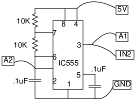

Schematic

Instructions
- Make connections on a bread board.
- The main output is connected to A1 for viewing the waveform and to IN2
for frequency and duty cycle measurements.
- A2 shows the waveform across the capacitor.
- Measure the frequency and duty cycle using the "Frequency" button.